Prepared By:
| Name | ID |
|---|---|
| Ahmed Ajmine Nehal | 2013090042 |
| Md. Mehedi Hasan | 2022107642 |
| 1. Introduction | 3 |
|
- Purpose - Document Conventions - Intended Audience and reading suggestions - Product Scope - References |
|
| 2. Overall Description | 4 |
|
- Product Perspective - Product Functions - User Classes and Characteristics - Operating Environment - Design and Implementation Constraints - User Documentation - Assumptions and Dependencies |
|
| 3. External Interface Requirements | 7 |
|
- User Interfaces - Hardware Interfaces - Software Interfaces - Communications Interfaces |
|
| 4. System Features | 19 |
|
- Student Attention Report - Automatic Exam Evaluation - Quiz Maker - AI Exam Invigilator - Cohort Maker |
|
| 5.Other NonFunctional Requirements | 22 |
|
- Performance Requirements - Safety Requirements - Security Requirements - Software Quality Attributes |
|
| Appendix A: Glossary | 23 |
The goal of this document is to provide a comprehensive description of the open-source software BELIEVER. It will explain the software's purpose and features, as well as its interfaces, what the software will do, and the constraints under which it must operate.
The IEEE template for System Requirement Specification Documents was used to create this document.
Students who want to use BELIEVER to access course materials, administer quizzes, and view a list of cohorts. And also, getting notify for giving course materials by mobile application. Teachers who want to use BELIEVER for creating student cohorts, assigning course materials to student cohorts, taking quizzes to assess which portions of course materials students are doing well or poorly, and setting quiz time. And also, seeing the report where students get well or not by mobile application. Programmers who want to contribute to the project by further developing it or fixing existing bugs.
This product is an example of learning management. Enable teachers to target struggles of students. Students go through their study in online.
BELIEVER’s BitBucket page:
https://bitbucket.org/nehal2-admin/cse327.1_project/src/main/
IEEE Template for System Requirement Specification Documents:
https://goo.gl/nsUFwy
BELIEVER was created with teachers and students in mind. Teachers can assess their students. Students can assist
with their studies.
It is an open source project with a very active developer team that supports it and provides user feedback. It
was created as a web application for Windows, Mac OS X, and Linux. It will be built in Android for mobile
applications.
2.2.1 Authentication:
2.2.2 Cohort:
2.2.3 Quiz Maker:
2.2.4 Report:
The operating environments of this product are:
Constraints:
User documentation will be available when the software will be ready. It will be written maintaining IEEE format.
The computer vision features may not be perfect. It depends on the user webcam quality. Also the speech to text conversion maybe not that accurate. Exam evaluation can be sometimes inaccurate.
1. Student or Teacher Sign in or Sign up page
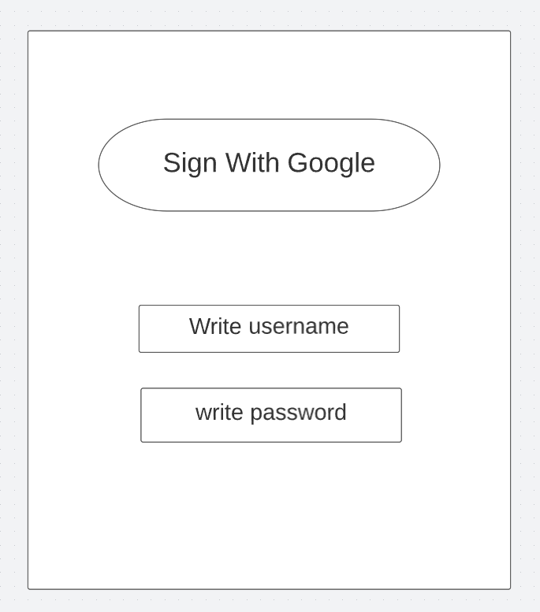2. User selecting they are student or teacher.
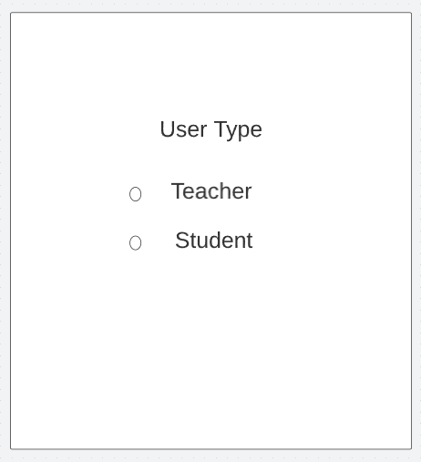3. Student's Dashboard [Student's View]
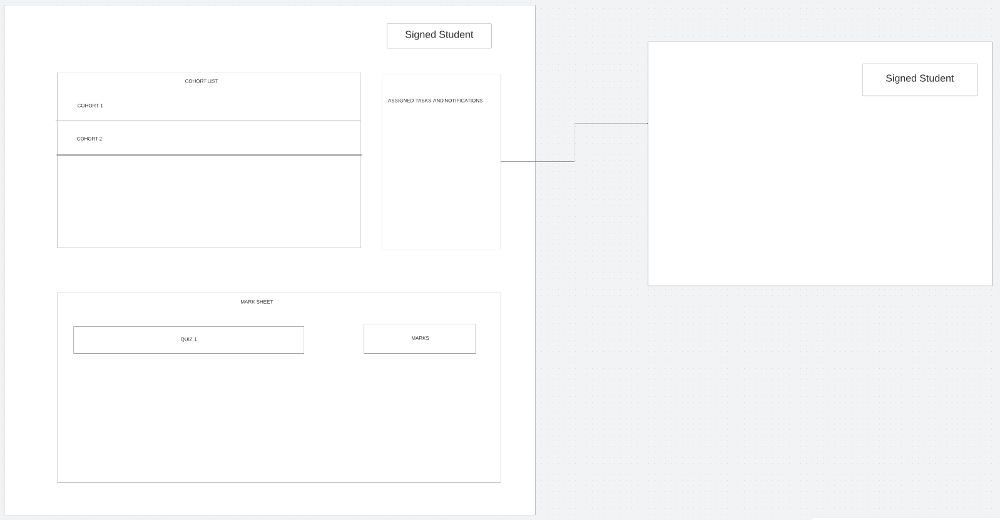4. Teacher's Dashboard [Teacher's View]
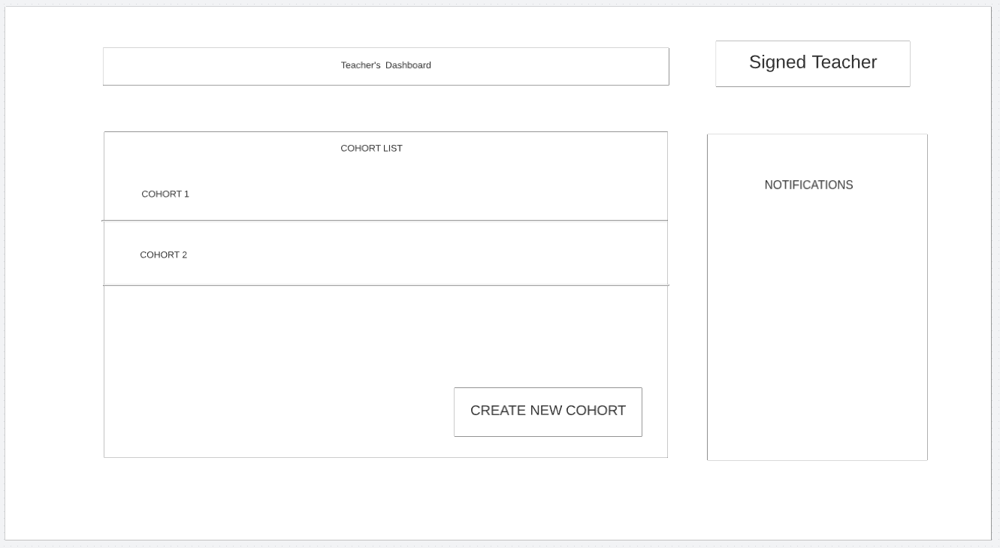5. Cohort Interface [Teacher's View]
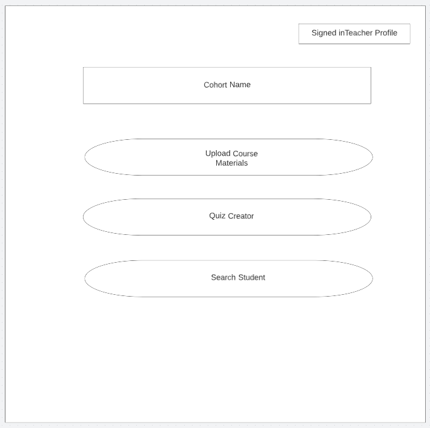6. Cohort Interface [Student's View]
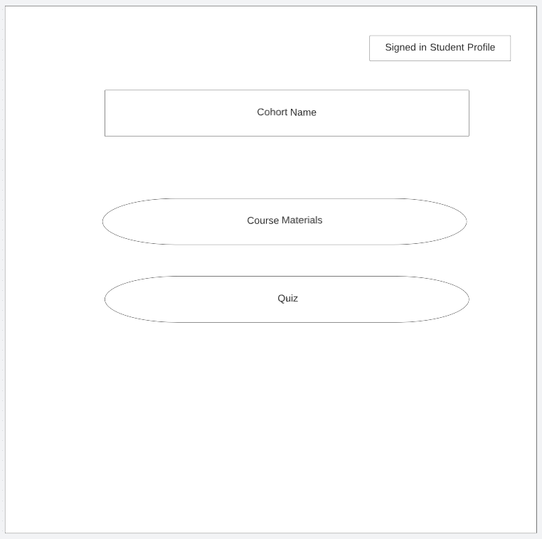7. Student's Details [Teacher's view]
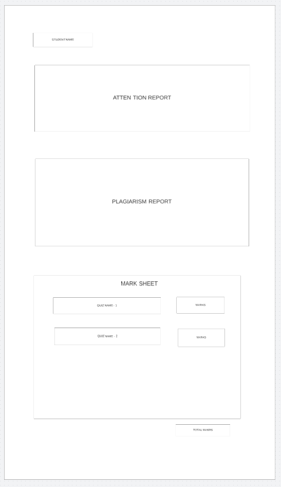8. Create Cohort page [Teacher's View]
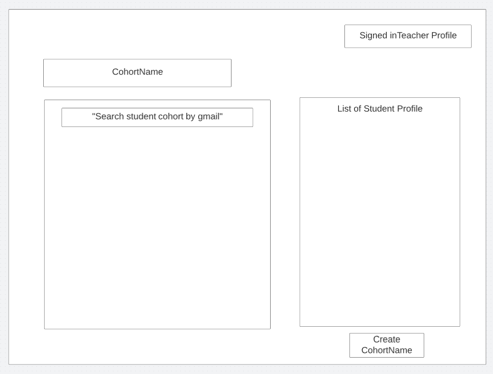9. Co hort list view [Teacher's view]
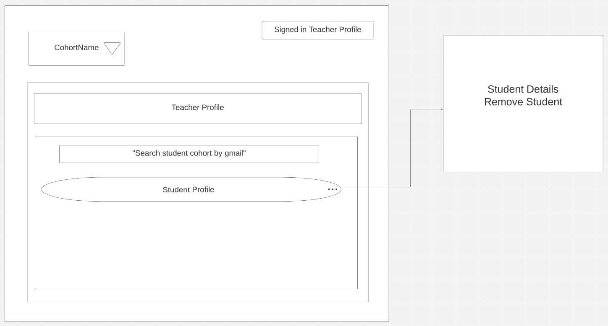10. Co hort list view [Student's view]
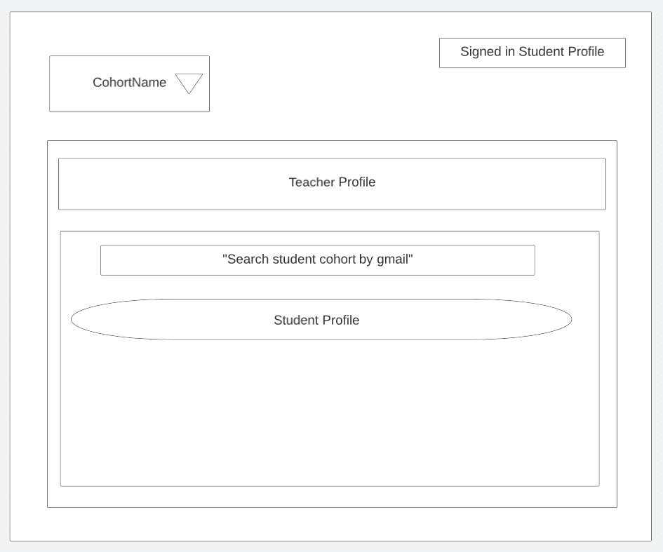11. Create Quiz [Teacher's View]
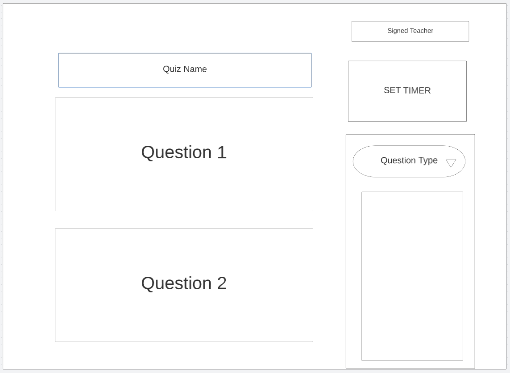12. View Quiz [Student's View]
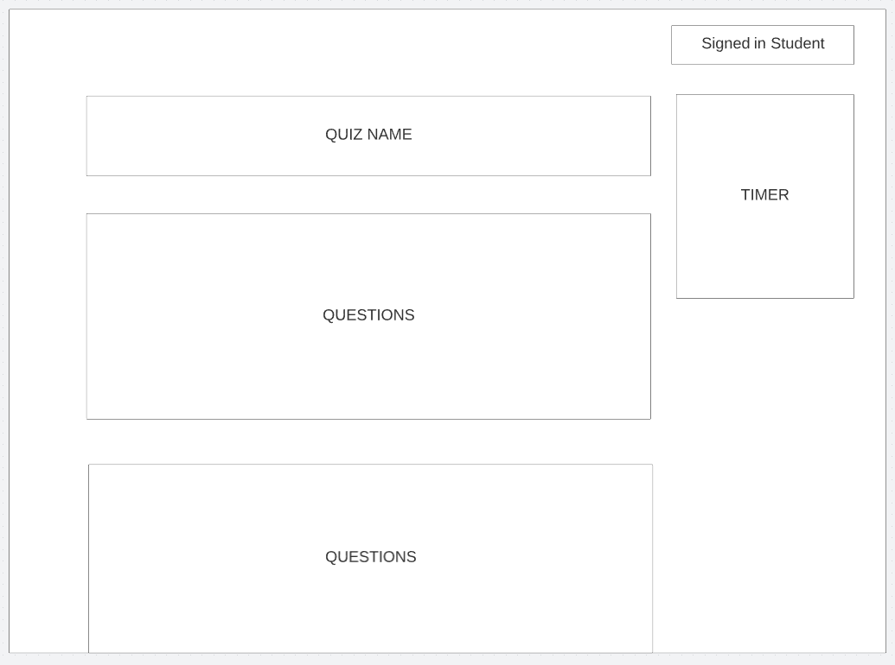Any personal computer with a browser and an Android device will be enough to use this software.
Since it is a web application any OS with a browser will be enough. Users can access using a web browser and also with their android devices. To interact with the database we will be using Spring boot. And we will be using MySQL for managing databases. Spring will be used to interact with the centralized server.
This software will communicate with google OAuth API for login verification. It will also communicate with the MySql server for the database. For transfering data it will use HTTP communication protocol and it will send responses as JSON. It will need continuous internet connectivity .
4.1.1 Description and Priority
In this feature teachers can see the report of a student’s attention span. They can see how much time a
student
gives to their reading materials and how sincere and focused they are when they read the study materials.
4.1.2 Stimulus/Response Sequences
When a student reads a reading material the webcam tracks the facial structure of the student and it sends the
response data to the system which will then make a graphical report on student’s attention span on a reading
material. Only The teacher can see the report of students.
4.1.3 Functional Requirements
To make this feature work students must have webcam on. And also, good internet connectivity. A webcam is
needed
for tracking the student’s activities.
REQ-1: A good quality webcam.
4.2.1 Description and Priority
Teacher’s doesn’t have to do any evaluation of the exams. It will be an automatic process. Our software will
get the exam answers from the reading materials. And evaluate them accordingly. Then it will show the exam
results and a report of which student couldn’t understand which part of the reading material to the teacher.
4.2.2 Stimulus/Response Sequences
When a teacher will set a question paper, our system will detect from where a particular question was made
from which reading material’s which para which sentence. Then it will grab the answer from that particular
reading material for the particular question and match with the student’s given answer and evaluate it. Our
system will also make a graphical report of a student’s understanding of reading materials for each student.
4.2.3 Functional Requirements
There are no functional requirements to use this feature
4.3.1 Description and Priority
A teacher can make Quizzes in this software. Teachers can make various types of questions like multiple
choice, fill in the gaps, multi word and most importantly a student can answer some question verbally. That
means a student can speak to answer their question. Teachers can also set timer for the quizzes. So, after
time ends no student will be able to answer the questions.
4.3.2 Stimulus/Response Sequences
Teachers can set questions from reading materials provided to the students. They can set various types of
questions. And students can answer them in the given time being. And the system will evaluate the answers and
will send the result to both the teacher and the students. A teacher can assign a quiz to any student or
cohort they want.
4.3.3 Functional Requirements
Students must have a mic for giving speech answers.
REQ-1: A good quality mic.
4.4.1 Description and Priority
During the exam time there will be strict proctoring through our Artificial Intelligence system. It will not
allow someone giving the exam on behalf of others. And also, it will track the student throughout the exam if
they do any illegal activities. It will also make sure a student has a safe environment for giving the exam.
4.4.2 Stimulus/Response Sequences
Our Artificial Intelligence system will use facial recognition of every student and will make sure no one else
is giving the exam on behalf of any student. If anything like that happens it will notify the teacher and also
a student will be removed from the exam. It will also track the student’s movements so that they can not do
any illegal activity, when the AI senses any illegal activity it will notify the teacher. It will also make
sure the student has no other people in his/her room.
4.4.3 Functional Requirements
To make this feature work students must have a webcam on. And also, good internet connectivity for the live
notifications. Teacher must have an android device to get the notifications.
REQ-1: A good quality webcam.
REQ-2: Android Device.
4.5.1 Description and Priority
A teacher can make cohorts with multiple students. A student can also be in multiple cohorts. Teachers can
assign tasks like quizzes and take exams of the students in a cohort. Students will be able to see their
assigned tasks and the people they are with in the cohort.
4.5.2 Stimulus/Response Sequences
When a teacher makes a cohort, they can select students and create the cohort. A teacher can also remove any
student from the cohort. Teachers can assign tasks, see the student details, student reports and also the
marksheets of any student in a cohort. Students can also see the task assigned and see the list of the people
they are within a cohort.
4.5.3 Functional Requirements
There are no functional requirements to use this feature.
This software can run in any web browser, so there are no hardware requirements. In any windows OS, Mac OS, linux OS it will run smoothly. But it must have a webcam so that the facial detection and recognition features work, also it needs to have a mic so speech to text features works. The android version of this software can run on any Android OS over Android 6. Performance of the software depends on the quality of the webcam and mic.
To ensure that no one of this software’s users loses any data while using it (due to a crash or a bug of some kind) the developer team will update this software regularly. There is a bug tracker available where users can report any bug’s they have encountered so that the developers can fix it in the next release.
This software has Google OAuth for the security of every student and teacher’s accounts. Any user must have a Google account or Gmail to create a profile in this software.
This software provides both the students and teachers with both simple and advanced features. Due to its well designed and easy to use interface it can be used by both experts and typical users. However, users must already have a basic knowledge of technologies to use it.
Cohort: A group of students working together through the same academic curriculum.
Facial Recognition: A facial recognition system is a technology capable of matching a human face from a digital image or a video frame against a database of faces. Such a system is typically employed to authenticate users through ID verification services, and works by pinpointing and measuring facial features from a given image.
Speech To text: is linked to a computer, which converts this information to properly spelled words.
Attention Span: Attention span is the amount of time spent concentrating on a task before becoming distracted.
Plagiarism Report: Plagiarism is the representation of another author's language, thoughts, ideas, or expressions as one's own original work.
OpenCV: OpenCV provides a real-time optimized Computer Vision library, tools, and hardware.
API: An application programming interface (API) is a way for two or more computer programs to communicate with each other.